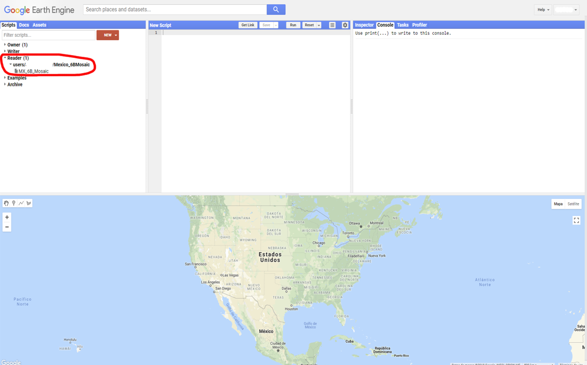
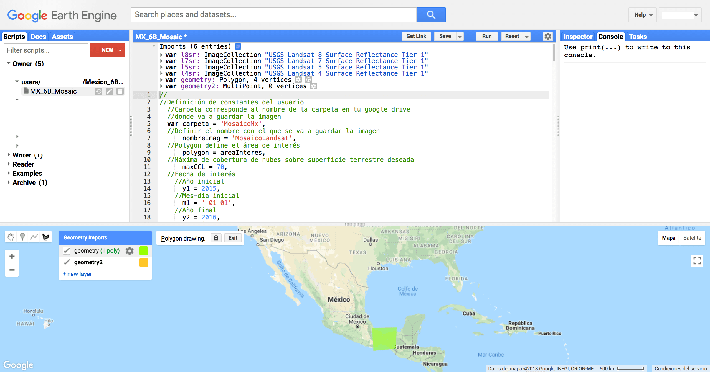
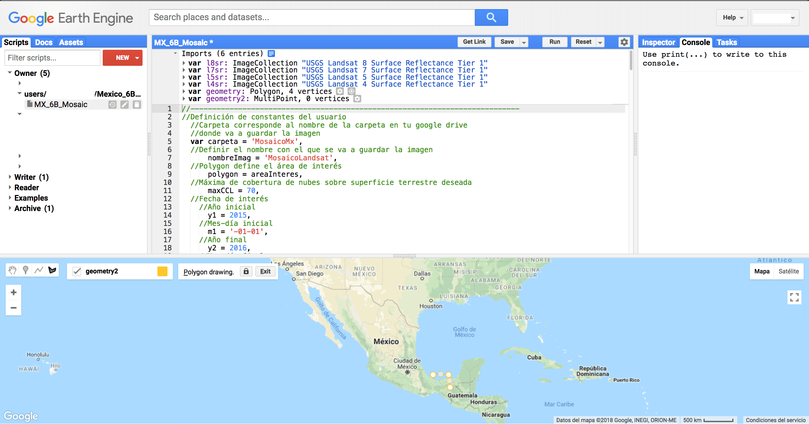
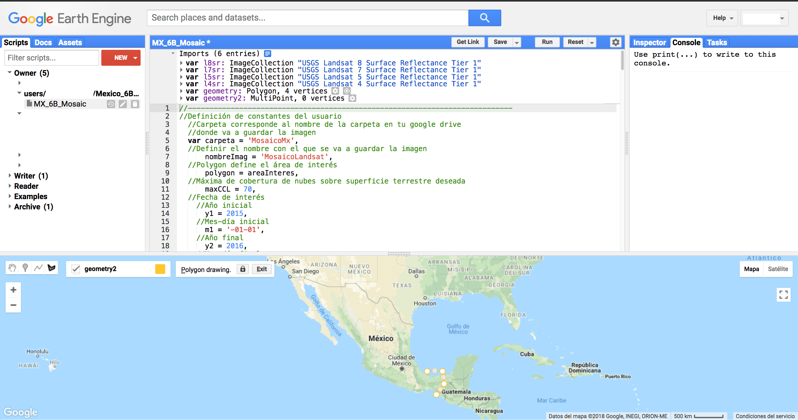
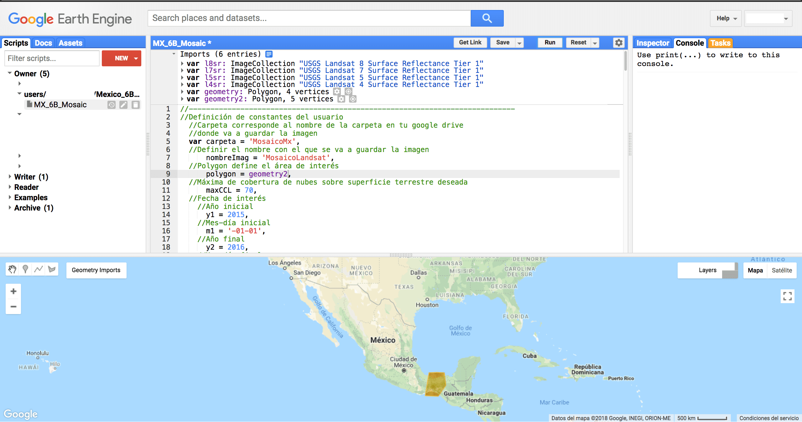
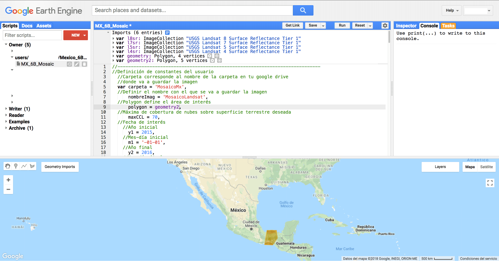
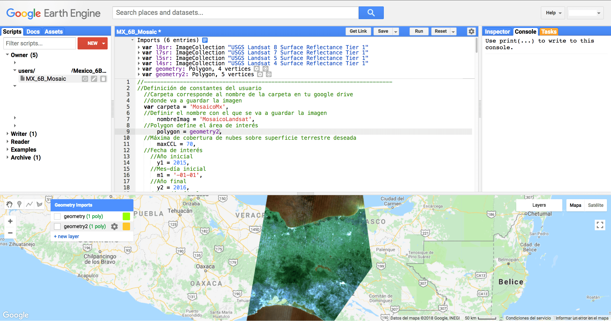
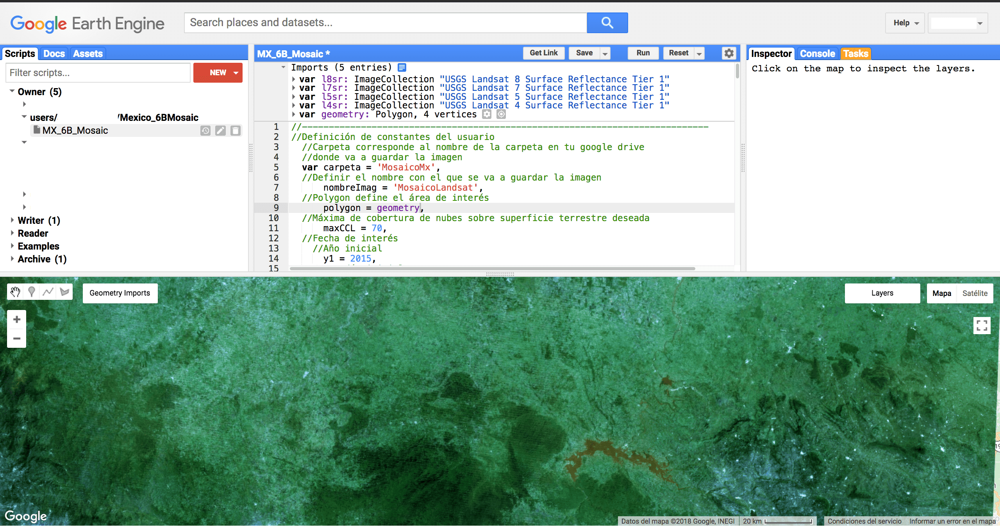
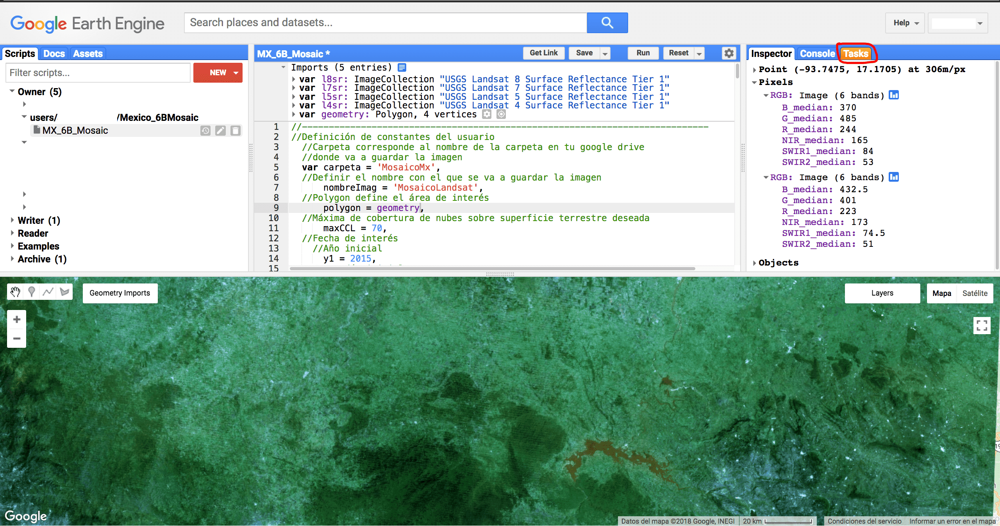

Mosaico de México en GEE
Jonthan V. Solórzano
Tutorial uso rutina GEE para hacer mosaicos
Pantalla de inicio
Elementos básicos son: - Pantalla de rutinas - Pantalla de repositorios - Inspector, Consola, Trabajos - Mapa

Abrir el código
Dentro de la pantalla de repositorios irse a la sección “Reader” y seleccionar MX_6B_Mosaic. Dar click y debería aparecer lo siguiente:

Correr la rutina
Irse al ícono de polígono.

Aparece el siguiente menú:

Dar click en new layer.
y aparece geometría nueva (p.ej. 2).

Apagar la capa de arriba (flechita de la izquierda).


Ir a la pantalla del mapa.

Dar click sobre el área de interés, aparece un punto blanco.

Mover el cursos para delimitar el área de interés.

Dar click en otro vértice.

Continuar con el mismo procedimiento colocando vértices.

Continuar colocando vertices.

Hasta cerrar la figura y que aparezca el relleno con color.

Notar que en la parte superior de la pantalla de rutinas, aparece la variable geometry2 Está localizada en la parte inferior de la pantalla de definición de variables.

Dar click en el nombre (en morado) y da la opción de renombrar la variable a como uno quiera. En este caso dejaré el nombre igual, como geometry2.

A continuación, en la parte de la rutina se busca la variable polygon = areaInteres.

Se cambia areaInteres por el nombre del polígono que dibujó el usuario, es decir, geometry 2.
De esta manera queda así. A continuación le damos click en Run.

Durante el proceso en la pantalla del mapa en la esquina superior derecha se verán barritas. cargando.

Una vez cargadas las barras grises aparece la imagen dentro del área de interés.

Se hace zoom al área de interés con el scroll del mouse o utilizando los botones de + y - de la pantalla del mapa en la esquina superior izquierda.


Le damos click en donde dice geometry imports.

Apagamos las capas que tengamos activadas (dar click en la felchita del lado izquierdo).

Podemos ver el mosaico.
Inspeccionar valores de pixeles
En la pantalla superior derecha podemos inspeccionar el valor de los pixeles en el mapa. Dar click en la pestaña Inspector.

Se debería ver así:

Ir al mapa.

Dar click en alguna región donde haya información de algún pixel.

Aparece el valor del pixel en las bandas.

Si se da click en otra área se actualizan los valores.

Exportar resultados
Ir a la pestaña de Tasks (marcada en naranja) y darle click.
Aparece esta pantalla, dar click en Run.

Aparece la siguiente pantalla con la información del archivo a guardar en tu Google Drive, nombre del trabajo, tamaño de pixel, folder donde lo va a guardar y nombre del archivo.

Dar click en Run.

Aparece un engranito al lado del trabajo que se corrió. Dar click en Run.

Esperar hasta que aparezca una palominta en donde se ve el engrane y aparecerá en tu drive la imagen descargada.
Errores
En caso de que durante alguno de los procesos ocurra un error, éste será indicado en la pestaña de la consola. Se recomienda leer la sección de Debugging de la plataforma, disponible en la siguiente liga: https://developers.google.com/earth-engine/debugging
Algunos de los errores más comunes incluyen:
- La falta de definición de los nombres de todas las variables (var).
- Sobrepasar el límite por default de pixeles a descargar.
- No poseer de suficiente espacio en el Google Drive personal.
- La falta de ; al final de cada comando.
- Errores ortográficos.
- Sobrepasar el límite de procesamiento. a.
- Sobrepasar el límite de procesamiento. b.
Las soluciones a cada uno de estos problemas son los siguientes:
- Revisar que todas las variables hayan sido declaradas con la función var.
- En la línea final de exportación de la imagen cambiar el valor de maxPixels.
- Borrar archivos que no se utilicen en el Google Drive.
- Revisar que todos los comandos finalicen con ;.
- Revisar los nombres de las variables y funciones (cuidando mayúsculas y minúsculas).
- Cuando ocurre esto normalmente se debe a que se quiere visualizar el resultado de un procesamiento tardado. La solución sencilla es no visualizar el resultado en el visualizador de la plataforma, sino sólo descargarlo. Google Earth Engine permite una mayor capacidad de procesamiento cuando se exportan los resultados que cuando se quiere visualizarlos.
- A veces se puede sobrepasar el límite de procesamiento por utilizar códigos redundantes. Este tipo de errores se pueden solucionar leyendo cuál es el método más apropiado para la función que el usuario desea realizar.